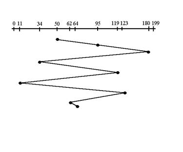
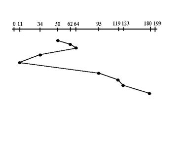
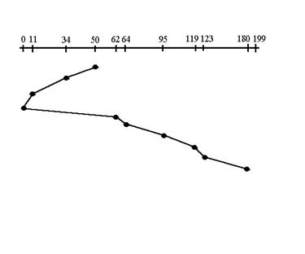
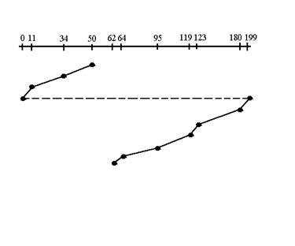
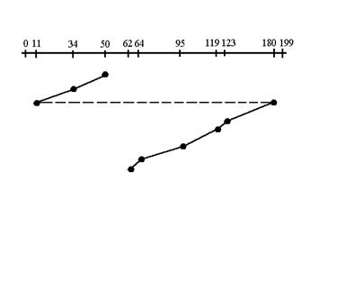

Tutorial 7
· Access time = Seek time + Search time + Transfer time
· Seek time: Time to position read/write head over the correct track. Slowest of the three factors
1. First Come -First Serve (FCFS)  All incoming requests are placed at the end of the queue. Whatever number that is next in the queue will be the next number served. Using this algorithm doesn't provide the best results. To determine the number of head movements you would simply find the number of tracks it took to move from one request to the next. For this case it went from 50 to 95 to 180 and so on. From 50 to 95 it moved 45 tracks. If you tally up the total number of tracks you will find how many tracks it had to go through before finishing the entire request. In this example, it had a total head movement of 640 tracks. The disadvantage of this algorithm is noted by the oscillation from track 50 to track 180 and then back to track 11 to 123 then to 64. As you will soon see, this is the worse algorithm that one can use.
2. Shortest
Seek Time First (SSTF) 
In this case request is serviced according to next shortest distance. Starting
at 50, the next shortest distance would be 62 instead of 34 since it is only 12
tracks away from 62 and 16 tracks away from 34. The process would continue
until all the process are taken care of. For example the next case would be to
move from 62 to 64 instead of 34 since there are only 2 tracks between them and
not 18 if it were to go the other way. Although this seems to be a better service
being that it moved a total of 236 tracks, this is not an optimal one. There is
a great chance that starvation would take place. The reason for this is if
there were a lot of requests close to eachother the other requests will never
be handled since the distance will always be greater.
3. Elevator
(SCAN) 
This approach works like an elevator does. It scans down towards the nearest
end and then when it hits the bottom it scans up servicing the requests that it
didn't get going down. If a request comes in after it has been scanned it will
not be serviced until the process comes back down or moves back up. This
process moved a total of 230 tracks. Once again this is more optimal than the
previous algorithm, but it is not the best.
4. Circular Scan
(C-SCAN) 
Circular scanning works just like the elevator to some extent. It begins its
scan toward the nearest end and works it way all the way to the end of the
system. Once it hits the bottom or top it jumps to the other end and moves in
the same direction. Keep in mind that the huge jump doesn't count as a head
movement. The total head movement for this algorithm is only 187 track, but
still this isn't the mose sufficient.
5. C-LOOK 
This is just an enhanced version of C-SCAN. In this the scanning doesn't go
past the last request in the direction that it is moving. It too jumps to the
other end but not all the way to the end. Just to the furthest request. C-SCAN
had a total movement of 187 but this scan (C-LOOK) reduced it down to 157
tracks.
From this
IRG (inter record gap) is there to allow tape motors to get up to speed before the next data comes under the read/write head. The tape motors may need to stop between records if the program is not requesting any more data from the tape data file at this time. If the program subsequently asks for data from the tape, the drive must get up to speed before the read can occur. This is a break between data records on hard drives and on magnetic tapes that serve a safely margin for data overwrites
Dedicated device: • Assigned to only one job at a time and serves that job for entire time it’s active, e.g., tape drives, printers, and plotters
Shared device: • Assigned to several processes, e.g., disk pack or other DASDs can be shared by several processes at same time by interleaving their requests Interleaving must be carefully controlled by Device Manager